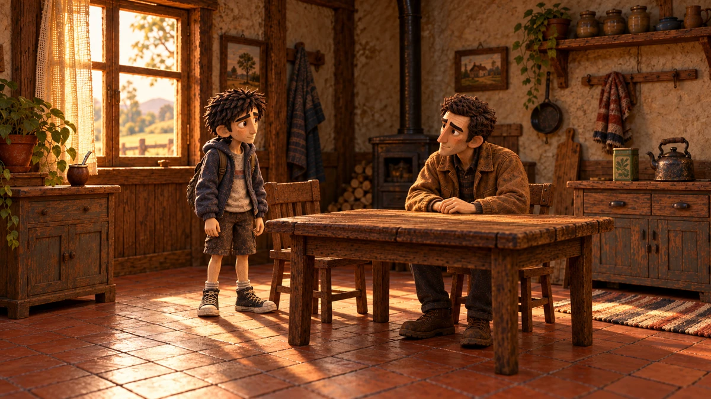
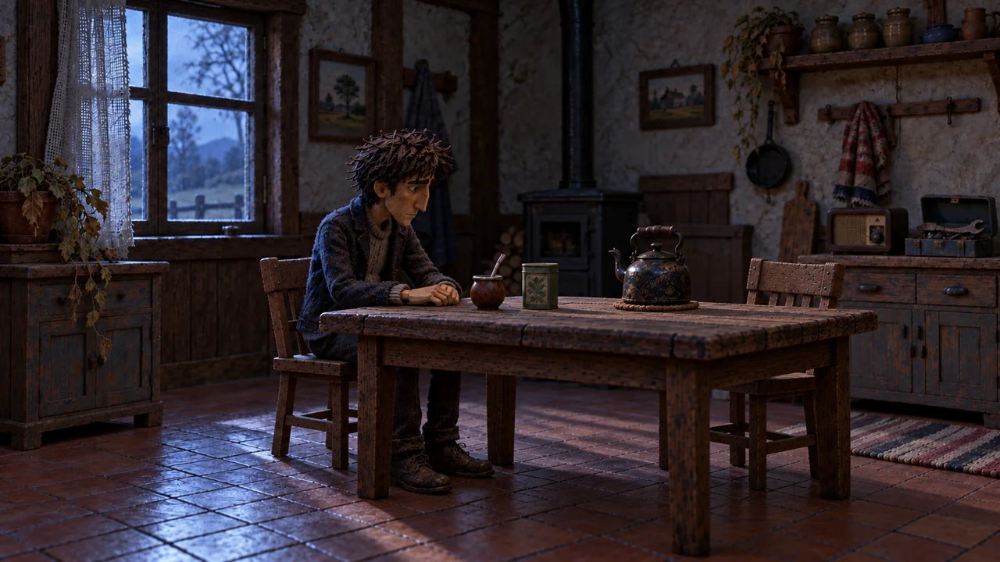

UNA HISTORIA. DOS EXPERIENCIAS.
Lo que queda
en la Tierra
Una casa. Tres recuerdos.
Un camino por seguir.
MEMORIA · DUELO · PARTIDA
EL UNIVERSO DE LA HISTORIA
Elegí cómo entrar.
El juego abre los recuerdos.
El cortometraje continúa el camino.

DISPONIBLE PARA JUGARVolver aencontrarte.
JUEGO NARRATIVO
La experiencia interactiva
Explorá la casa de Valentino. Hay objetos que todavía tienen algo que contar.

PARA CELULARLa historia,en tus manos.
JUEGO PARA CELULAR
Llevá la historia con vos
La experiencia completa, con controles táctiles y una carga más liviana.
 PRÓXIMAMENTELo que queda
PRÓXIMAMENTELo que quedapor delante.
CORTOMETRAJE
La historia continúa
Los recuerdos lo trajeron hasta acá. Ahora, queda un camino por recorrer.
Hay cosas que siguen con nosotros.
Incluso cuando es hora de partir.